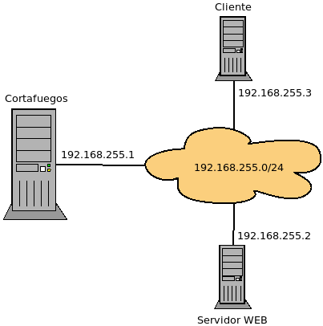
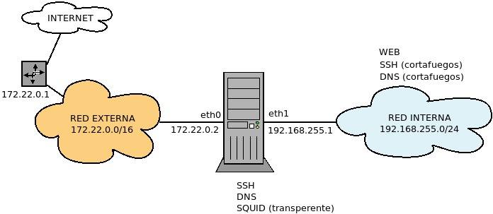
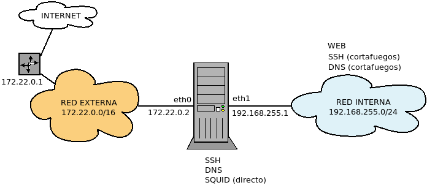

8.7.3.2.3. Uso práctico¶
Se tratarán, porque ayudan a ilustrar el uso del cortafuegos, los mismos casos que se estudiaron con iptables. Como en aquella ocasión, se aplicará siempre una política de lista blanca.
8.7.3.2.3.1. Casos ejemplares¶
Los tres casos que ayudan a entender el seguimiento de las conexiones son:
8.7.3.2.3.1.1. Conexión a servidor genérico¶
Se considera el siguiente esquema:

en el que nuestro cortafuegos se interpone entre una red interna de clientes y el exterior. Esta red externa puede o no ser internet. Lo que realmente distingue a la red externa de la interna es que en la interfaz con la que conecta el cortafuegos (eth0) se hace enmascaramiento, de manera que los clientes internos son conscientes de que se comunican con el exterior, mientras que las máquinas externas no son capaces de ver más allá de esta interfaz. Así pues, será necesaria una regla de enmascaramiento.
Estudiemos dos casos de distintos de conexión de un cliente a un servidor:
El caso en que un cliente interno quiere conectar con un servidor web externo.
El caso en que un cliente externo quiere conectar con un servidor web de la red interna (supondremos su IP 192.168.255.2).
Tomaremos como base la siguiente configuración:
#!/usr/sbin/nft -f
flush ruleset
table ip filter {
chain INPUT {
type filter hook input priority filter
policy drop
iiftype loopback accept
}
chain OUTPUT {
type filter hook output priority filter
policy drop
oiftype loopback accept
}
chain FORWARD {
type filter hook forward priority filter
policy drop
}
}
include "./nftables.d/*.nft"
A la cual añadiremos esta (por ejemplo, en el fichero
99-masquerade.nft):
# /etc/nftables/99-masquerade.nft
table ip nat {
chain POSTROUTING {
type nat hook postrouting priority srcnat
oif eth0 snat to 172.22.0.2
}
}
- Servidor externo
Las claves para la configuración son:
Los clientes deben ser capaces de hacer la petición web atravesando el cortafuegos y, por supuesto, el tráfico consecuente debe atravesarlo también.
Para navegar es necesario resolver nombres, de modo que las peticiones DNS también deben poder atravesar el router.
Esto podemos implementarlo añadiendo la siguiente configuración:
# /etc/nftables/10-external.nft # # Servicios del exterior accesibles desde la red interna. # table ip filter { chain FORWARD { ct state established accept oif eth0 tcp dport {http, https} accept comment "Acceso Web" oif eth0 udp dport domain accept comment "Resolución de nombres" oif eth0 tcp dport domain accept comment "Resolución de nombres" } }
Nota
Como la cadena ya existe, las reglas se añaden. No es esto, aunque lo parezca, una cadena de usuario.
Nota
Dado que queremos que el tráfico de los clientes fluya libremente por el servidor, podríamos mejorar el rendimiento de la solución usando flowtables, que consiste en sustituir el código de la cadena CHAIN por el siguiente:
# /etc/nftables/10-external.nft # # Servicios del exterior accesibles desde la red interna. # table ip filter { flowtable bypass { hook ingress priority 0 devices = {eth0, eth1} } chain atajo { flow add @bypass accept } chain FORWARD { oif eth0 tcp dport {http, https} jump atajo oif eth0 udp dport domain jump atajo oif eth0 tcp dport domain jump atajo # ¿Por qué es necesario esto para que no se eternice el DNS? ct state established accept } }
No volveremos a tratar esta posibilidad en los ejemplos, pero téngala en consideración.
- Servidor interno
La diferencia radical es que los clientes, que están en la red externa, desconocen por completo que el servidor web es en realidad una máquina interna e intentan la conexión directamente al cortafuegos. Por tanto, el cortafuegos deberá hacer una redirección hacia la máquina servidor:
# /etc/nftables.d/10-internal.nft table ip nat { chain PREROUTING { type nat hook prerouting priority dstnat iif eth0 tcp dport {http, https} dnat to 192.168.255.2 comment "Acceso al servidor web" } } table ip filter { chain FORWARD { ct status dnat accept # Es probable que se quiera que el servidor acceda al exterior... } }
Es probable que el servidor web, para funcionar correctamente, requiera poder conectarse al exterior, pero deberá analizarse en cada caso.
8.7.3.2.3.1.2. Conexión a servidor FTP¶
La dificultad de este protocolo es que utiliza dos canales de comunicación: el de control y el de datos.
Ver también
Lea con atención el epígrafe sobre los modos de funcionamiento de FTP.
La dificultad del protocolo radica en el establecimiento del canal de datos relacionado con el de control, sobre todo en el caso del modo activo, en el cual el canal lo abre el servidor, no el cliente. Los cortafuegos de inspección de estado son capaces de lidiar con esta dificultad gracias a que son capaces de distinguir conexiones y estimar si una conexión está relacionada con otra.
Antes de pasar a analizar las reglas concretas, deben tenerse presente tres cosas:
Para que netfilter sea capaz de identificar el canal de datos como conexión relacionada, necesita entender y analizar la conexión FTP. Esto se logra cargando un módulo:
# modprobe nf_conntrack_ftp
Cuando en un router se lleva a cabo enmascaramiento (como es el caso de nuestro cortafuegos), las máquinas externas creen estar comunicándose con el router, no con una máquina interna, lo cual provocará que:
En el modo activo cuando el servidor es externo, éste intentará abrir el canal de datos con el router, no con cliente, por lo que el router tendrá que hacer un DNAT. Esta dificultad es fácil de solucionar, porque el puerto de origen siempre es el 20/TCP.
En el modo pasivo cuando el servidor es interno, el cliente intentará abrir el canal de datos con el router, no con el servidor, po lo que habrá que hacer DNAT. El problema es que no hay definidos puertos típicos para este canal de datios, sino que los puertos de cliente y servidor varían de conexión a conexiín. En consecuencia, es imposible hacer una regla estática que nos resuelva este problema.
Afoortunadamente, el núcleo de linux incorpora otro módulo que es capaz de reconocer cuándo debe hacerse el DNAT y lo lleva a cabo:
# modprobe nf_nat_ftp
Para que lo anterior funcione, es necesario que el núcleo sepa cuáles son las conexiones que debe monitorizar en busca de conexiones relacionadas. Estos monitores reciben el nombre de helpers y hay un puñado de ellos definidos. FTP tiene el suyo y hay también que declarar que quiere usarse. Si se trabaja con iptables, debe cambiarse un parámetro del núcleo, pero con nftables la declaración del helper se lleva a cabo dentro de la propia configuración.
Nota
Para automatizar en el arranque la carga de los dos módulos anteriores lo más cómodo es hacer:
# cat > /etc/modules-load.d/ftp.conf
nf_conntrack_ftp
nf_nat_ftp
Resolvamos ahora el mismo caso que para el servidor genérico, pero particularizado para el servicio FTP (o cualquier otro que abra una conexión relacionada). Tengamos presente que permitir la comunicación por el canal de control es exactamente el mismo caso que el del servidor genérico, pero que en este caso:
Debemos cargar los módulos ya mencionados.
Debemos definir el helper para que monitorice el canal de control.
Debemos permitir el canal de datos, esto es, el tráfico relacionado.
- Servidor externo
Tomando como base la solución para el servidor genérico:
table ip filter { ct helper ftp-standard { type "ftp" protocol tcp; } chain FORWARD { ct state {established, related} accept oif eth0 tcp dport ftp ct helper set "ftp-standard" accept comment "FTP" oif eth0 udp dport domain accept comment "Resolución de nombres" oif eth0 tcp dport domain accept comment "Resolución de nombres" } }
- Servidor interno
La solución difiere un poco respecto a la del servidor genérico:
table ip nat { chain PREROUTING { type nat hook prerouting priority dstnat iif eth0 tcp dport ftp dnat to 192.168.255.2 comment "Acceso al servidor FTP" } } table ip filter { ct helper ftp-standard { type "ftp" protocol tcp } chain FORWARD { iif eth0 tcp dport ftp ct helper set "ftp-standard" accept ct state {related, established} accept # Es probable que se quiera que el servidor acceda al exterior... } }
ya que hay que definir el helper y además indicar cuándo se debe usar. Esto hace que sea no podamos ser tán vagos como en el caso anterior en que aceptamos cualquier tráfico que hubiera sufrido DNAT.
8.7.3.2.3.1.3. Conexión a un servidor antipático¶
Consideremos la siguiente red:
en la cual el servidor web sólo admite comunicaciones con el cortaguegos (192.168.255.1), por lo que el cliente no puede comunicarse directamente con él, por lo que el cliente deberá pedir las páginas al cortafuegos y éste redirigir ese tráfico al servidor.
Podríamos, como en los casos anterior, redirigir en el cortafuegos la petición del cliente hacia el servidor, pero la cosa seguirá sin funcionar por dos razones:
El servidor no responderá, puerto que sólo se comunica con la 192.168.255.1 y la petición procede de 192.168.255.3.
Aun en el supuesto de que respondiera, la IP de destino de la respuesta sería 192.168.255.3, y el servidor respondería directamente a esta ella puesto que se encuentra en la misma red. El cliente recibiría un paquete procedente de 192.168.255.2, no de 192.168.255.1 y no sabiendo qué hacer con él lo desechará.
La solución es que el cortafuegos además del DNAT hacia el servidor a la entrada, haga un SNAT arrogándose él el paquete, a fin de que el servidor web lo tome a él como el origen, de modo que no lo rechaza y le envíe envíe la respuesta. Ya en el cortafuegos, se desarán los cambios y la respuesta regresará al cliente como si la hubiera hecho el propio cortafuegos.
Para llevar a cabo tal estrategia:
table ip nat {
chain PREROUTING {
type nat hook prerouting priority dstnat
tcp dport {http, https} dnat to 192.168.255.2
}
chain POSTROUTING {
type nat hook postrouting priority srcnat
ct status dnat snat to 192.168.255.1
}
}
Ver también
Vea la tabla resumen del recorrido del paquete en el epígrafe gemelo escrito para iptables.
8.7.3.2.3.2. Casos prácticos¶
En rodos estos casos, la base de la configuración es la la política de lista blanca del primer caso ejemplar y el enmascaramiento. Sobre ella, añadiremos otros ficheros para resolver los casos.
8.7.3.2.3.2.1. Acceso simple¶
Se dispone de un cortafuegos con SSH instalado para configurarlo exclusivamente desde la red interna. Los clientes internos deberían ser capaces de navegador.

Para permitir el acceso SSH desde la red interna:
# /etc/nftables.d/05-firewall.nft table ip filter { chain INPUT { ct state established accept iif eth1 tcp dport ssh accept comment "Administración SSH" } }
Para permitir el tráfico web de los clientes y sus consultas DNS:
# /etc/nftables.d/10-external.nft table ip filter { chain FORWARD { ct state established accept oif eth0 tcp dport {http, https} accept comment "Acceso Web" oif eth0 udp dport domain accept comment "Resolución de nombres" oif eth0 tcp dport domain accept comment "Resolución de nombres" } }
8.7.3.2.3.2.2. Acceso con DNS propio¶
Al caso anterior, se añade un servidor DNS para agilizar las consultas

Para permitir el acceso DNS y el SSH:
# /etc/nftables.d/05-firewall.nft table ip filter { chain INPUT { ct state established accept iif eth1 tcp dport domain accept comment "Servicio DNS" iif eth1 tcp dport domain accept comment "Servicio DNS" iif eth1 tcp dport ssh accept comment "Administración SSH" } chain OUTPUT { ct state established accept oif eth0 tcp dport domain accept comment "Consulta DNS" oif eth0 tcp dport domain accept comment "Consulta DNS" } }
Para permitir el tráfico web de los clientes:
# /etc/nftables.d/10-external.nft table ip filter { chain FORWARD { ct state established accept oif eth0 tcp dport {http, https} accept } }
8.7.3.2.3.2.3. Acceso mediante squid (modo transparente)¶
A la configuración anterior se añade que se quiere forzar a que la navegación no segura se haga a través de un proxy squid configurado en modo transparente en el cortafuegos. Supóngase que el puerto de escucha de squid es el 3128.
En este caso, para el tráfico HTTP (no el HTTPs) es en realidad el cortafuegos el que hace las consultas al exterior.
Accesos del servidor o al servidor:
# /etc/nftables.d/05-firewall.nft table ip filter { chain INPUT { ct state established accept ct status dnat accept iif eth1 tcp dport domain accept comment "Servicio DNS" iif eth1 tcp dport domain accept comment "Servicio DNS" iif eth1 tcp dport ssh accept comment "Administración SSH" } chain OUTPUT { ct state established accept oif eth0 tcp dport http accept comment "Consultas web" oif eth0 tcp dport domain accept comment "Consulta DNS" oif eth0 tcp dport domain accept comment "Consulta DNS" } }
Accesos de la red interna al exterior:
# /etc/nftables.d/10-external.nft table ip nat { chain PREROUTING { type nat hook prerouting priority dstnat tcp dport http redirect to :3128 comment "Redirección a SQUID" } } table ip filter { chain FORWARD { ct state established accept oif eth0 tcp dport https accept comment "Acceso HTTPs al exterior" } }
8.7.3.2.3.2.4. Acceso mediante squid (modo directo)¶
La misma configuración, pero en este caso, squid se configura en modo directo en el puerto 8080 tanto para tráfico web seguro como no seguro.
En este caso no hay tráfico que atraviese el servidor ya que tanto las consultas DNS como todas las consultas web las hace el servidor:
# /etc/nftables.d/05-firewall.nft table ip filter { chain INPUT { ct state established accept iif eth1 tcp dport domain accept comment "Servicio DNS" iif eth1 tcp dport domain accept comment "Servicio DNS" iif eth1 tcp dport http-alt accept comment "Acceso s SQUID" iif eth1 tcp dport ssh accept comment "Administración SSH" } chain OUTPUT { ct state established accept oif eth0 tcp dport {http, https} accept comment "Consultas web" oif eth0 tcp dport domain accept comment "Consulta DNS" oif eth0 tcp dport domain accept comment "Consulta DNS" } }
8.7.3.2.3.2.5. Servidor web interno¶
El supuesto es parecido al primero (una red interna a la que se quiere permitir navegar), pero añade la existencia de un servidor web interno en 192.168.255.100 al que se quiere permitir acceso desde el exterior.

A la configuración del primer supuesto, habrá que añadir la que permite el acceso al servidor web interno:
# /etc/nftables.d/25-servint.nft
table ip nat {
chain PREROUTING {
type nat hook prerouting priority dstnat
tcp dport {http, https} dnat to 192.168.255.100
}
}
table iip filter {
chain FORWARD {
ct status dnat accept
}
}
8.7.3.2.3.2.6. Servidores web y FTP internos¶
Al caso anterior, añadimos un servidor FTP n la misma máquina que el servidor web:

Reescribimos el fichero anterior:
# /etc/nftables.d/25-servint.nft
table ip nat {
chain PREROUTING {
type nat hook prerouting priority dstnat
tcp dport {ftp, http, https} dnat to 192.168.255.100
}
}
table iip filter {
ct helper ftp-standard {
type "ftp" protocol tcp
}
chain FORWARD {
iif eth0 tcp dport ftp ct helper set "ftp-standard" accept
ct status dnat accept
ct state {related, established} accept
}
}
Y, además, debemos cargar los módulos apropiados del núcleo.